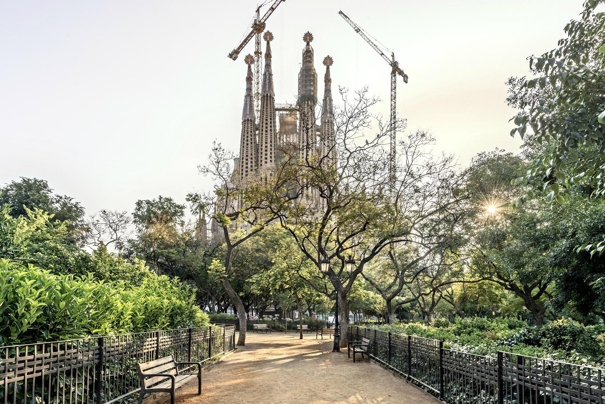
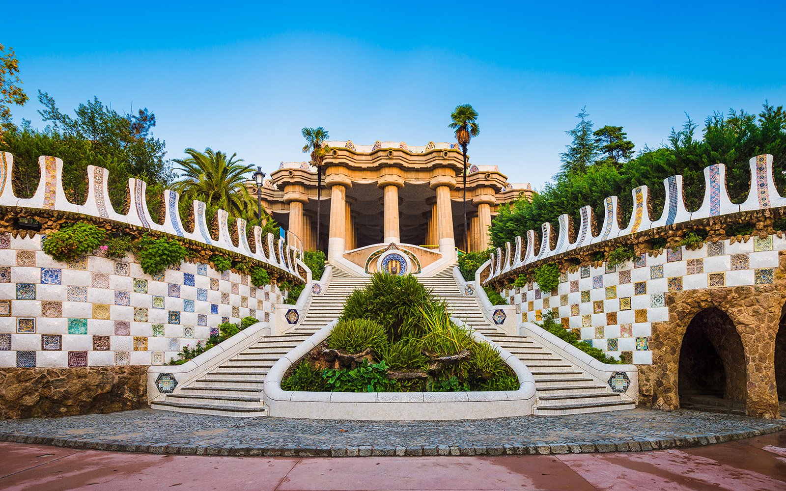
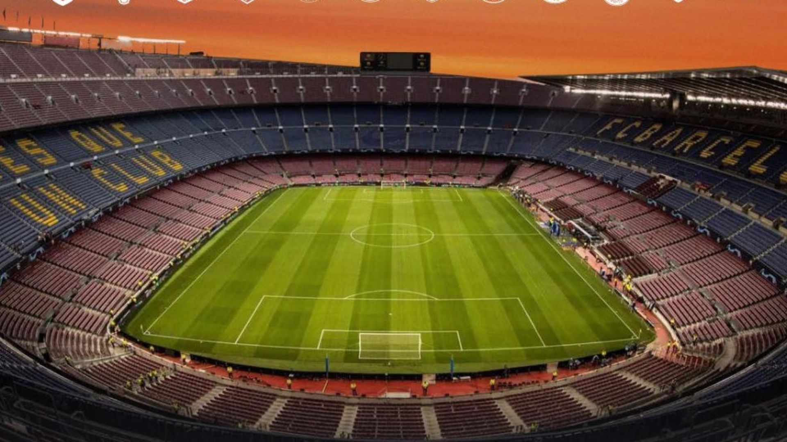
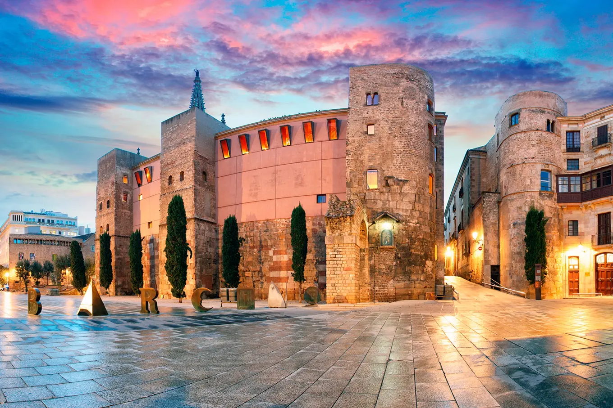

Barcelona - Visão Geral





Sagrada Família
A Basílica da Sagrada Família é a obra-prima inacabada do arquiteto Antoni Gaudí, um dos ícones mais impressionantes da arquitetura modernista.
Las Ramblas
Las Ramblas é uma avenida famosa de Barcelona, repleta de artistas de rua, cafés e lojas, ligando a Plaça de Catalunya ao porto.
Parque Güell
O Parque Güell é um parque público com jardins e elementos arquitetônicos deslumbrantes, também projetados por Gaudí, oferecendo vistas espetaculares da cidade.
Camp Nou
O Camp Nou é o estádio do FC Barcelona, um dos maiores do mundo, e oferece tours que mostram a rica história do clube.
Bairro Gótico
O Bairro Gótico é o centro histórico de Barcelona, com ruas estreitas, praças charmosas e arquitetura medieval fascinante.